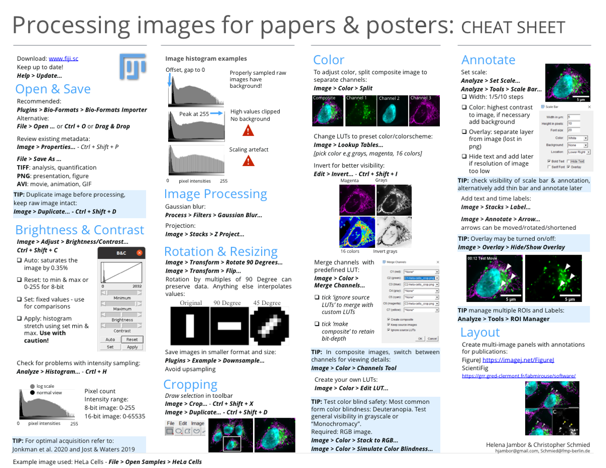
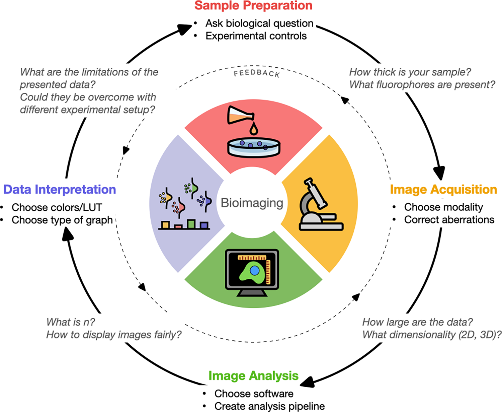

Cheat sheets for Image publishing
Images, initially drawings now photos, are widely used in biology and medicine but when published not always understandable.
Image Workflow for Novice Users
When preparing images for publication, the sequence and proper use of software matters to truthfully report observations. During the first lock down, Christopher Schmied and I therefore created cheat sheets that explain a most basic workflow to get everyone from microscope data to figure in a few simple steps.
Cheat Sheets
The workflow is summarized in two printable cheat sheets. One cheat sheet explains the steps towards a publishable image, the second cheat sheet how to implement the steps with ImageJ/FIJI image processing software.


Download
Get the cheat sheets as printable PDF. Note, we used an open license, that means you can get the adaptable files and e.g., make translations, alterations, or add your own notes.
A German version was already made by Joram Schwartzmann, checkt it out!
Further resources
Beyond our starter cheat sheets more great resources help you along the way: The “Biologist’s guide to planning and performing quantitative bioimaging experiments” describes the entire arc from sample to microscope via image analysis towards data interpretation and publication. The resource lists many key points and aggregates links to more detailed descriptions, making it easy for biologists to navigate their first microscopy experiments.

More about
Microscopy image acquisition
- Seeing is believing? A beginners’ guide to practical pitfalls in image acquisition. North, A.J., 2006. J Cell Biol
- Fluorescence microscopy–avoiding the pitfalls. JBrown, C.M., 2007. Cell Sci 120, 1703–1705.
- Rigor and Reproducibility in Confocal Fluorescence Microscopy. Jonkman, J., 2020. Cytometry A
Fluorophores and Filters
- Optimizing live-cell fluorescence imaging conditions to minimize phototoxicity. Kiepas, A., Voorand, E., Mubaid, F., Siegel, P.M., Brown, C.M., 2020. J Cell Sci.
- Assessing phototoxicity in live fluorescence imaging.Laissue, P.P., Alghamdi, R.A., Tomancak, P., Reynaud, E.G., Shroff, H., 2017. Nat Methods
- Recommendations for a standardized nomenclature for probe tags used in cytometry and microscopy imagingBlenman, K.R.M., Spidlen, J., Parks, D.R., Moore, W., Treister, A., Leif, R., Bray, C., Goldberg, M., ISAC Data Standards Task Force, Brinkman, R., 2021. ISAC Probe Tag Dictionary: Standardized Nomenclature for Detection and Visualization Labels Used in Cytometry and Microscopy Imaging. Cytometry A
Sample preparation
- Seeing is believing? A beginners’ guide to practical pitfalls in image acquisition. North, A.J., 2006. J Cell Biol
Method reporting
- Towards community-driven metadata standards for light microscopy: tiered specifications extending the OME model.Hammer, M., Huisman, M., Rigano, A., Boehm, U., Chambers, J.J., Gaudreault, N., North, A.J., Pimentel, J.A., Sudar, D., Bajcsy, P., Brown, C.M., Corbett, A.D., Faklaris, O., Lacoste, J., Laude, A., Nelson, G., Nitschke, R., Farzam, F., Smith, C.S., Grunwald, D., Strambio-De-Castillia, C., 2021. Nat Methods
- A guide to accurate reporting in digital image acquisition - can anyone replicate your microscopy data?Heddleston, J.M., Aaron, J.S., Khuon, S., Chew, T.-L., 2021. J Cell Sci
- Best practices and tools for reporting reproducible fluorescence microscopy methods. Montero Llopis, P., Senft, R.A., Ross-Elliott, T.J., Stephansky, R., Keeley, D.P., Koshar, P., Marqués, G., Gao, Y.-S., Carlson, B.R., Pengo, T., Sanders, M.A., Cameron, L.A., Itano, M.S., 2021. Nat Methods
- Imaging methods are vastly underreported in biomedical research. Marques G, P.T., Sanders MA, 2020. Elife
- Micro-Meta App: an interactive tool for collecting microscopy metadata based on community specifications.Rigano, A. et al. Nat. Methods
- MethodsJ2: a software tool to capture metadata and generate comprehensive microscopy methods text. Ryan, J., Pengo, T., Rigano, A., Llopis, P.M., Itano, M.S., Cameron, L.A., Marqués, G., Strambio-De-Castillia, C., Sanders, M.A., Brown, C.M., 2021. Nat Methods
Image analysis & processing software
- Fiji: an open-source platform for biological-image analysis.Schindelin J, Arganda-Carreras I, Frise E, Kaynig V, Longair M, Pietzsch T, et al. Nature methods
- A Hitchhiker’s guide through the bio-image analysis software universe.Haase, R., Fazeli, E., Legland, D., Doube, M., Culley, S., Belevich, I., Jokitalo, E., Schorb, M., Klemm, A., Tischer, C., 2022. FEBS Lett
- Reproducible image handling and analysis. Miura K NS. EMBO J. 2021;40(3):e105889.